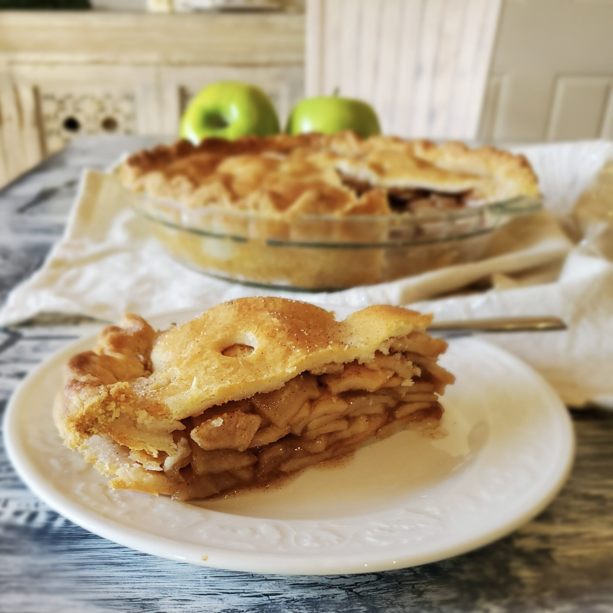
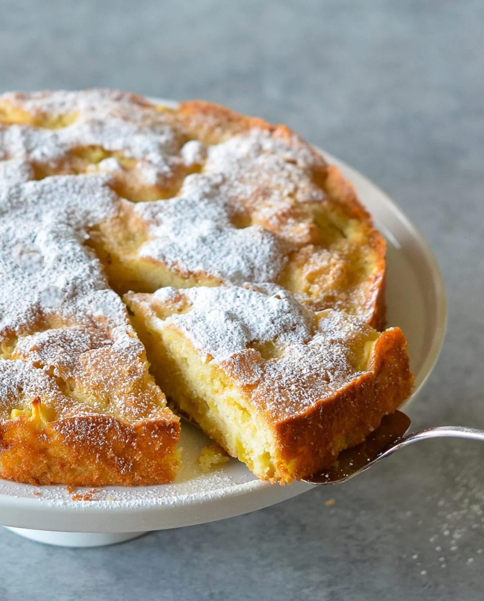

To start us off, everyone knows the iconic apple pie. Apple pies are considered to originate in England during the 14th century, the creator is unkown. Regardless of apple pie being an all-around American classic, the culinary was brought over from European/English colonists. The time apple pie was considered an American household treat is around the 18th and 19th century and really became a big hit during the 20th century,
The design and visual appeal of the apple pie was heavily inspired by french cuisine, the netherlands and even the ottoman empire. Originally, Apple pie was made with apples, fighs, pears, and raisins but suprisingly, there was no inclusion of sugar.
Now, apple pies are known to include brown sugar, any sorts of apples, and a variety of different ingredients. With it's charming flavor palette and inexpensive ingredients, apple pies became a popular dessert all around.

French Apple Cake
Have you ever heard of French Apple Cake? Apple Cake is seen as more of a tart rather than a typical cake. However, it does make the name a little unique! Despite their counterpart of apple pies, this unique pastry has an interesting style and flavor palette to it. Apparently French Apple Cake is similar to what'd you expect from a regular cake although, it has sliced apples inbetween layers to give it a soft and moist texture, almost like tres leches.
Some variations of this dessert include the ingredient of rum or alcohol but if you aren't a fan, its very easy to substitue out.

Out of my own boredom I've recently made an apple cake out of curiosity and found this recipe to be quite good! Apple Cake